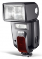

58 AF-1 Digital 最大闪光指数为58，可垂直(-7/+90°)和水平(300°)俯仰及摇摆灯头，闪光覆盖范围24-105mm。
比原厂值的一个很牛的副厂灯。
1、色温感觉比原厂的准。 2、子母灯设计。 3、回电比较快。 4、可以升级固件，太爽了。
1、按键少。操控不如原厂方便。好像习惯后也差不多。
配我的d80非常满意
出力很准！用三洋电池回电也很好！补光情况下，没感觉到要等！操作很简单的啊！
不认星dx画幅
沙发~~~~哈哈哈哈哈 用的佳能口.都说佳能580操作困难就放弃了...感觉操作没有困难.虽是外文界面但简明易懂. 插到胶片机也可以正常用.
主要是便宜..全新的才不到3000rmb 很贱地做主灯
变焦的时候唧唧歪歪. 不知道原厂的灯什么动静,没用过. 原装柔光板死难配...貌似全系列用同一款,能不缺货吗